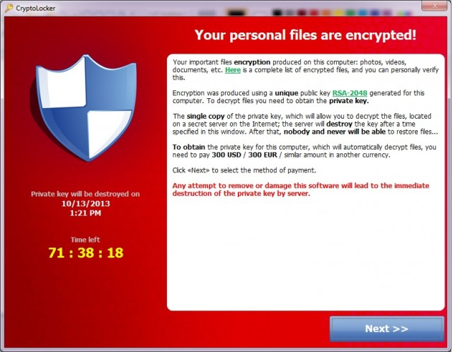

Ransom Ware
- CryptoLocker: Oct 17, 2013 http://arstechnica.com/ 2013/10/
youre-infected- if-you-want-to-see- your-data-again-
pay-us-300-in-bitcoins/ Has this screenshot:
 … An employee received an e-mail purporting
to come from Intuit. Attached zip with an executable. When the
receiver clicked on it, he saw a white box flash briefly on his
screen but didn't notice anything else out of the ordinary. … By
the time CryptoLocker had run its course, hundreds of gigabytes
worth of company data was no longer available.
- http://www.bleepingcomputer.com/ virus-removal/ cryptolocker-
ransomware- information
- http://www.reddit.com/r/ sysadmin/comments/1mizfx/ propercare_
feedingofyour_ cryptolocker/
- http://www.reddit.com/ r/sysadmin/comments/1p32lx/ cryptolocker_
recapa_ newguidetothebleepingest/
- Asks for money is the least interesting part. How did it encrypt?
Did it send the file to a remote system, encrypt it there, and
receive the result, replace the original file with the received
file? All this is doable by an ordinary user. Did it do it on the
local (compromised) machine?
- Request for an interview.
- {Seth Bauguess, Public Relations Strategist, Office of
Communications and Marketing Office: (937) 912-0622 Cell: (937)
765-2047 seth.bauguess@wright.edu http://www.wright.edu/news}
- Jill E. Krause jekrause@sbgtv.com http://www.abc22now.com/ 45,
myTVdayton.com, | Managing Editor 2245 Corporate Place,
Miamisburg, OH 45342 Tel: 937.262.1415 | Fax: 937.263.9537
- Nov 4, 3:30 PM
- http://www.wfaa.com/news/technology/New-computer-virus-called-worst-ever-asks-for-ransom-to-unlock-data-229951851.html
- Cyber Security Professor Mike Saylor at Collin College says of the
quarter million different versions of ransomware, Cyberlocker is
the worst. He believes most of it was developed overseas.
- http://www.wfaa.com/news/technology/Five-ways-to-protect-your-computer-against-ransomware-229947431.html
- http://superuser.com/questions/13507/
how-can-visiting-a-webpage-infect-your-computer
- http://bitcoin.org/ Bitcoin is an innovative payment network and a
new kind of money. Bitcoin uses peer-to-peer technology to operate
with no central authority or banks; managing transactions and the
issuing of bitcoins is carried out collectively by the
network. Bitcoin is open-source; its design is public, nobody owns
or controls Bitcoin and everyone can take part. Through many of its
unique properties, Bitcoin allows exciting uses that could not be
covered by any previous payment system.
- Ukash is eMoney. You treat it exactly like cash but spend it
online. Perfect if you don’t have a credit or debit card or don’t
want to use your card to pay online.
- A web page can have Java applets and JavaScript. Although modern
browsers sandbox JavaScript so it can only do file operations in
/tmp, JavaScript can still take advantage of actual vulnerabilities
within the browser itself.
Copyright © 2013 •
www.wright.edu/~pmateti • 2013-11-03T13:54-0500